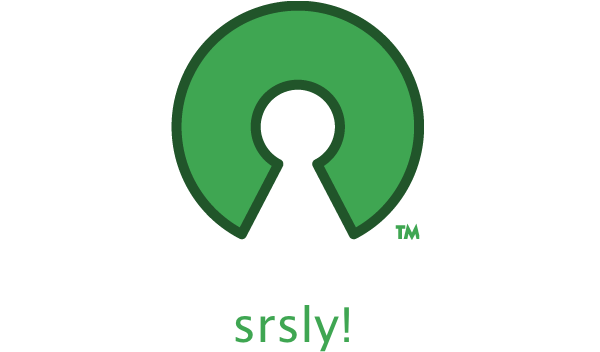

Механика open source в «серьёзном» бизнесе
релятивистские эффекты
open source?
состав
- идеология
- люди, сообщества
- код
цифры
- 1 миллион разработчиков на github
- 2 миллиона репозиториев на github
- 300 тысяч проектов на sourceforge
- 20 тысяч программ в портах FreeBSD и пакетах Debian
serious business?
состав
- серьёзные деньги
- опытные специалисты
- глубокая модель
business & OSS?
отношения
- потреблять (Facebook, ...)
- производить (Red Hat, ...)
- привлекать (Google, ...)
традиции
- игнорировать открытость
- использовать бесплатность
- временами что–то тюнить
результат
- беспорядочные миграции
- постоянная неудовлетворённость
- переход на закрытые решения или прозябание
doing it right™
учиться
- мотивация — личные достижения, профессиональный интерес
- управление — меритократия, оттенки диктатуры
- планирование — краткие сроки, выпуск достижений
дедлайны
- не должны мешать стратегии
- управление будущим
- эффект бабочки, резонансы и посевы
примеры удочек
- FreeBSD/amd64 Nvidia GPU driver
- taglib-based CLI id3 v2.3 tagger
- Supermicro IPv6 IPMI
задачи
- растут из технологий, не наоборот
- технократия и перфекционизм
- делегация творчества
открытый космос
- вопросы в сообществе
- баунти
- контракты
time and materials
- непредсказуемость
- цена апстрим-коммита
- человеческий фактор
поддержка
- support-контракты
- бронирование времени
- рабочее время сотрудников
сёрфинг по апдейтам
- следствие внутренней технократии
- тонус и ритм без усилий
- критичные долгосрочные корректировки
примеры сёрфинга
- TrustedBSD audit, ugidfw
- FreeBSD RADIX_MPATH, rctl(1)
- PostgreSQL FDW
корзины и яйца
- у большинства проблем есть решения на разных уровнях
- избыточные посевы
- пример: nginx, UFS, application
вишлистинг pro
- каждая проблема — 2–3 новых пожелания
- изолированные, самодостаточные задачи
- публикации и прочие резонансы
серьёзный b2b
- волшебное слово для обмена секретной технологической информацией
- offloading задач на более крупные компании
- эксклюзивные партнёрства
менеджмент вовне
- 1 миллион разработчиков vs ?? сотрудников
- где-то в пустыне между PM, SMM и community management
- Google Summer of Code как апогей
своя агенда
- гибридные экосистемы на закрытых и открытых компаниях
- инициирующий серьёзный бизнес в центре
- пример: meatcore
напоследок
- open source уважает коммерческий интерес
- даже без денег
- заявка о статусе
dig open source?
we're hiring!